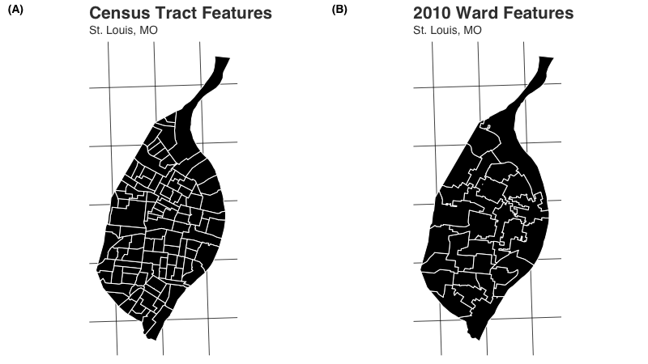
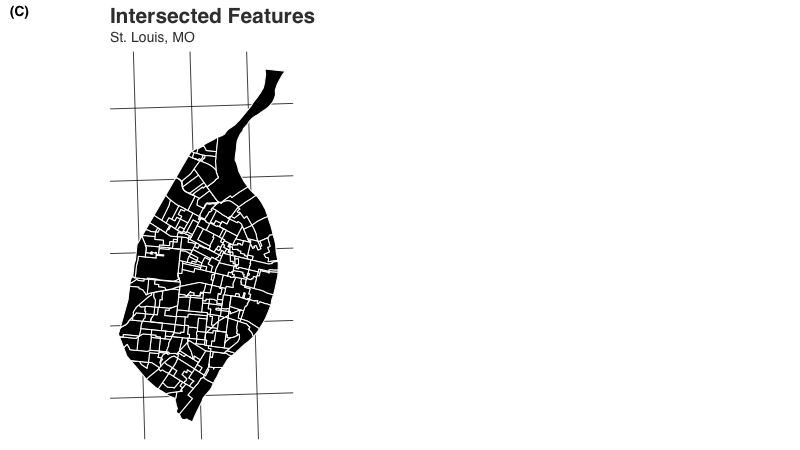
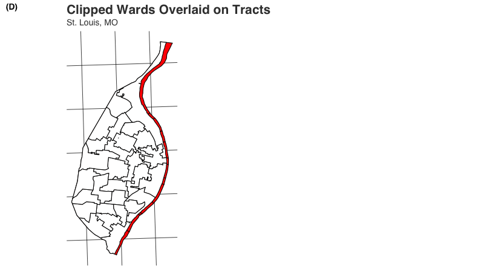

vignettes/areal-weighted-interpolation.Rmd
areal-weighted-interpolation.RmdAreal weighted interpolation is a technique for estimating the values for overlapping but incongruent polygon features. This article describes the areal package’s approach to areal weighted interpolation. After providing a quick introduction to the technique, the options for aw_interpolate() are discussed and an example of interpolating data using the manual workflow is provided.
Areal weighted interpolation is the simplest approach to estimating population values for overlapping polygons. It makes a significant and important assumption - that individuals are spread out evenly within the source features. This assumption quickly breaks down in the real world - areas that have commercial developments mixed in with residential housing, for example, or neighborhoods with a large city park. We do not always have access to this type of contextual data, however, and so areal weighted interpolation remains a popular choice.
Areal weighted interpolation is a multi-step process. The areal package contains a number of example data sets that can be used to illustrate this process:
library(areal)
# load data into enviornment
race <- ar_stl_race # census tract population estimates
asthma <- ar_stl_asthma # census tract asthma rate estimates
wards <- ar_stl_wards # political boundaries
wardsClipped <- ar_stl_wardsClipped # political boundaries clipped to riverThe boundaries for the race and asthma the data are the same - census tracts. When mapped, this is what the census tract and ward features look like:

The first step with areal weighted interpolation is to intersect the data. Imagine one shapefile (we’ll call this the “target”) acting as a cookie cutter - subdividing the features of the other (which we’ll call the “source”) based on areas of overlap such that only those overlapping areas remain (this is important - if these shapefiles do not cover identical areas, those areas only covered by one shapefile will be lost). The number of new features created is entirely dependent on the shapes of the features in the source and target data sets:
# print number of features in source
nrow(race)
#> [1] 106
# print number of features in target
nrow(wards)
#> [1] 28
# create intersect for example purposes
nrow(suppressWarnings(sf::st_intersection(race, wards)))
#> [1] 286By intersecting these two data sets, we get a new data set with n = 287 features. The resulting sf object looks like so:

One by-product of the intersection process is that each intersected feature takes on the attributes of both the source and target data. The population value of interest from each source feature (for example, total population per tract or TOTAL_E), therefore exists as an attribute for each intersected feature. The identification numbers from both the source (GEOID) and the target data (WARD) are also applied:
| GEOID | TOTAL_E | WARD |
|---|---|---|
| 29510101100 | 2510 | 11 |
| 29510101100 | 2510 | 12 |
| 29510101200 | 3545 | 12 |
| 29510101200 | 3545 | 13 |
We then calculate an areal weight for each intersected feature. Let:
\[ {W}_{i} = \frac { {A}_{i} }{ {A}_{j} } \]
Since \({A}_{j}\) is calculated using the source identification number, the first two observations from table above with the first four rows of intersected data would have the same value for \({A}_{j}\), and the second two observations would also share the same \({A}_{j}\). The resulting values for \({W}_{i}\) would therefore be:
| GEOID | TOTAL_E | WARD | Ai | Aj | Wi |
|---|---|---|---|---|---|
| 29510101100 | 2510 | 11 | 355702.9 | 1257034 | 0.282970 |
| 29510101100 | 2510 | 12 | 901331.1 | 1257034 | 0.717030 |
| 29510101200 | 3545 | 12 | 875554.7 | 1084167 | 0.807583 |
| 29510101200 | 3545 | 13 | 208612.1 | 1084167 | 0.192417 |
Next, we need to estimate the share of the population value that occupies the intersected feature. Let:
\[ {E}_{i} = {V}_{j}*{W}_{i} \]
Using our sample data, we therefore multiply the value (TOTAL_E) by the weight (Wi) to produce our EST estimate column:
| GEOID | TOTAL_E | WARD | Ai | Aj | Wi | EST |
|---|---|---|---|---|---|---|
| 29510101100 | 2510 | 11 | 355702.9 | 1257034 | 0.282970 | 710.2547 |
| 29510101100 | 2510 | 12 | 901331.1 | 1257034 | 0.717030 | 1799.7450 |
| 29510101200 | 3545 | 12 | 875554.7 | 1084167 | 0.807583 | 2862.8820 |
| 29510101200 | 3545 | 13 | 208612.1 | 1084167 | 0.192417 | 682.1182 |
Finally, we summarize the data based on the target identification number. Let:
\[ {G}_{k} = \sum{{E}_{ik}} \]
With our hypothetical data, the resulting table would therefore look like:
| WARD | EST |
|---|---|
| 11 | 710.2547 |
| 12 | 4662.6270 |
| 13 | 682.1182 |
This process is repeated for each of the n = 287 observations in the intersected data - areal weights are calculated, and the product of the areal weight the source value is summed based on the target identification number.
The example above is a spatially extensive interpolation because it involves count data. In areal, these estimates are obtained using the aw_interpolate() function:
aw_interpolate(wards, tid = WARD, source = race, sid = GEOID,
weight = "sum", output = "tibble", extensive = "TOTAL_E")
#> # A tibble: 28 × 4
#> OBJECTID WARD AREA TOTAL_E
#> <dbl> <int> <dbl> <dbl>
#> 1 1 1 46138761. 7959.
#> 2 2 2 267817711. 12111.
#> 3 3 3 66291644. 7357.
#> 4 4 4 53210707. 8458.
#> 5 5 5 60462396. 8808.
#> 6 6 6 64337271. 14053.
#> 7 7 7 101268146. 15842.
#> 8 8 8 45966410. 12189.
#> 9 9 9 73993891. 14218.
#> 10 10 10 62915358. 11239.
#> # … with 18 more rowsFor spatially extensive interpolations, a list of variable names should be supplied for the argument extensive. This can be a single variable name, such as in the example above, or a vector of variable names:
aw_interpolate(wards, tid = WARD, source = race, sid = GEOID,
weight = "sum", output = "tibble",
extensive = c("TOTAL_E", "WHITE_E", "BLACK_E"))
#> # A tibble: 28 × 6
#> OBJECTID WARD AREA BLACK_E TOTAL_E WHITE_E
#> <dbl> <int> <dbl> <dbl> <dbl> <dbl>
#> 1 1 1 46138761. 7748. 7959. 152.
#> 2 2 2 267817711. 10612. 12111. 1315.
#> 3 3 3 66291644. 6644. 7357. 594.
#> 4 4 4 53210707. 8203. 8458. 160.
#> 5 5 5 60462396. 7075. 8808. 1532.
#> 6 6 6 64337271. 7441. 14053. 5840.
#> 7 7 7 101268146. 6630. 15842. 8219.
#> 8 8 8 45966410. 3797. 12189. 7605.
#> 9 9 9 73993891. 6413. 14218. 6839.
#> 10 10 10 62915358. 1666. 11239. 8703.
#> # … with 18 more rowsThis ability is a key feature of areal - iteration is built into the package by default, eliminating the need for repeated table joins after interpolations are calculated.
The aw_interpolate function also uses an argument weight. There are two options, "sum" and "total". Each makes a different assumption about the nature of the data and the relationship between the source and target features. For perfectly overlapping data, the distinction between these two options should not matter. In practice, however, there are often deviations in our data even between features that should be perfectly congruous.
The "sum" approach to calculating weights assumes that 100% of the source data should be divided among the target features. When \({A}_{j}\) is calculated (see previous section), it is done by taking the sum of the areas for all intersected features (\(i\)) within a given source feature (\(j\)). Let:
\[ {A}_{j} = \sum{{A}_{ij}} \]
On the other hand, the "total" approach to calculating weights assumes that, if a source feature is only covered by 99.88% of the target features, only 99.88% of the source target’s data should be allocated to target features in the interpolation. When \({A}_{j}\) is created, the actual area of source feature \(j\) is used.
In the example above, race and wards are products of two different agencies. The aw_stl_wards data is a product of the City of the St. Louis and is quite close to fully overlapping with the U.S. Census Bureau’s TIGER boundaries for the city. However, there are a number of very small deviations at the edges where the ward boundaries are smaller than the tracts (but only just so). These deviations result in small portions of census tracts not fitting into any ward.
We can see this in the weights that are used by aw_interpolate(). The aw_preview_weights() function can be used to return a preview of these areal weights.
aw_preview_weights(wards, tid = WARD, source = race, sid = GEOID,
type = "extensive")
#> # A tibble: 106 × 3
#> GEOID extensiveSum extensiveTotal
#> <chr> <dbl> <dbl>
#> 1 29510101100 1 0.999
#> 2 29510101200 1 1.00
#> 3 29510101300 1 1.00
#> 4 29510101400 1 1.00
#> 5 29510101500 1 0.998
#> 6 29510101800 1 0.978
#> 7 29510102100 1 0.991
#> 8 29510102200 1 0.999
#> 9 29510102300 1 0.999
#> 10 29510102400 1 1.00
#> # … with 96 more rowsThe first tract listed above has a total estimated population of 2510. The practical impact of the weights is that only 2507.072085 individuals will be allocated to wards if the "total" approach to calculating areal weights is used. If "sum" is used, on the other hand, all 2510 individuals would be allocated to wards. In this scenario, the "sum" approach makes more sense because, while the race and ward data do not overlap in practice, they should overlap since no tracts extend out of the city’s boundaries. We therefore want to ensure that all individuals within each tract are allocated out to wards.
With spatially extensive interpolations that utilize the "sum" approach, the sum of the interpolated column should equal the sum of the original source data’s column that was interpolated. This can be verified with aw_verify():
result <- aw_interpolate(wards, tid = WARD, source = race, sid = GEOID,
weight = "sum", output = "tibble", extensive = "TOTAL_E")
aw_verify(source = race, sourceValue = TOTAL_E,
result = result, resultValue = TOTAL_E)
#> [1] TRUEThis check does not work with the "total" approach to areal weights:
result <- aw_interpolate(wards, tid = WARD, source = race, sid = GEOID,
weight = "total", output = "tibble", extensive = "TOTAL_E")
aw_verify(source = race, sourceValue = TOTAL_E,
result = result, resultValue = TOTAL_E)
#> [1] FALSEWe can use the aw_stl_wardsClipped data to illustrate a more extreme disparity between source and target data. The aw_stl_wardsClipped data have been modified so that the ward boundaries do not extend past the Mississippi River shoreline, which runs along the entire eastern boundary of the city. When we overlay them on the city’s census tracts, all of the census tracts on the eastern side of the city extend outwards.

The difference in weights in this example is more extreme:
aw_preview_weights(wardsClipped, tid = WARD, source = race, sid = GEOID,
type = "extensive")
#> # A tibble: 106 × 3
#> GEOID extensiveSum extensiveTotal
#> <chr> <dbl> <dbl>
#> 1 29510101100 1 0.999
#> 2 29510101200 1 1.00
#> 3 29510101300 1 1.00
#> 4 29510101400 1 1.00
#> 5 29510101500 1 0.998
#> 6 29510101800 1 0.722
#> 7 29510102100 1 0.991
#> 8 29510102200 1 0.999
#> 9 29510102300 1 0.999
#> 10 29510102400 1 1.00
#> # … with 96 more rowsOnly 72.31% of tract 29510101800, for example, falls within a ward. In many American cities that lie within larger counties, tract boundaries do not stop at the municipal boundaries in a way that is similar to the difference between tracts and the clipped wards here. In this scenario, we do not want to allocate every individual into our city of interest and the "total" approach to weights is appropriate. Not using "total" would result in an over-count of individuals in our city.
If, on the other hand, we believe that all of the individuals should be allocated into wards, using "total" in this case would result in a severe under-count of individuals.
Spatially intensive operations are used when the data to be interpolated are, for example, a percentage or density value. An example of these data can be found in ar_stl_asthma, which contains asthma rates for each census tract in the city. The interpolation process is very similar to the spatially extensive workflow, except with how the areal weight is calculated. Instead of using the source data’s area for reference, the target data is used in the denominator. Let:
\[ {W}_{i} = \frac { {A}_{i} }{ \sum{{A}_{ik}} } \]
Like spatially extensive interpolations that use the "sum" approach, the weights for intensive interpolations should always be equal to 1 as well.
aw_preview_weights(wards, tid = WARD, source = asthma, sid = GEOID,
type = "intensive")
#> # A tibble: 28 × 2
#> WARD intensive
#> <int> <dbl>
#> 1 1 1
#> 2 2 1
#> 3 3 1
#> 4 4 1
#> 5 5 1
#> 6 6 1
#> 7 7 1
#> 8 8 1
#> 9 9 1
#> 10 10 1
#> # … with 18 more rowsWe can calculate the intensive interpolation by specifying a variable name for the intensive argument in aw_interpolate() and omitting the extensive argument:
aw_interpolate(wards, tid = WARD, source = asthma, sid = GEOID,
weight = "sum", output = "tibble", intensive = "ASTHMA")
#> # A tibble: 28 × 4
#> OBJECTID WARD AREA ASTHMA
#> <dbl> <int> <dbl> <dbl>
#> 1 1 1 46138761. 13.4
#> 2 2 2 267817711. 13.2
#> 3 3 3 66291644. 14.1
#> 4 4 4 53210707. 13.6
#> 5 5 5 60462396. 13.8
#> 6 6 6 64337271. 11.7
#> 7 7 7 101268146. 9.72
#> 8 8 8 45966410. 9.82
#> 9 9 9 73993891. 11.8
#> 10 10 10 62915358. 9.44
#> # … with 18 more rowsThis gives us an estimate of the asthma rates at the ward level.
areal also provides support for “mixed” interpolations where both spatially extensive and intensive interpolations need to be calculated. We specify a variable name or a vector of variable names for both the intensive and extensive arguments:
# remove sf geometry
st_geometry(race) <- NULL
# create combined data
race %>%
select(GEOID, TOTAL_E, WHITE_E, BLACK_E) %>%
left_join(asthma, ., by = "GEOID") -> combinedData
# interpolate
aw_interpolate(wards, tid = WARD, source = combinedData, sid = GEOID,
weight = "sum", output = "tibble", intensive = "ASTHMA",
extensive = c("TOTAL_E", "WHITE_E", "BLACK_E"))
#> # A tibble: 28 × 7
#> OBJECTID WARD AREA BLACK_E TOTAL_E WHITE_E ASTHMA
#> <dbl> <int> <dbl> <dbl> <dbl> <dbl> <dbl>
#> 1 1 1 46138761. 7748. 7959. 152. 13.4
#> 2 2 2 267817711. 10612. 12111. 1315. 13.2
#> 3 3 3 66291644. 6644. 7357. 594. 14.1
#> 4 4 4 53210707. 8203. 8458. 160. 13.6
#> 5 5 5 60462396. 7075. 8808. 1532. 13.8
#> 6 6 6 64337271. 7441. 14053. 5840. 11.7
#> 7 7 7 101268146. 6630. 15842. 8219. 9.72
#> 8 8 8 45966410. 3797. 12189. 7605. 9.82
#> 9 9 9 73993891. 6413. 14218. 6839. 11.8
#> 10 10 10 62915358. 1666. 11239. 8703. 9.44
#> # … with 18 more rowsUsers should take care to consider the implications of interpolating multiple values, such as total population and the number of African American residents (both extensive), and then calculating a spatially intensive variable from them such as percent African American. Doing so in multiple steps, and thereby treating extensive and intensive values as independent, may result in estimates that differ from a single step process where the percent of African American residents is interpoltated directly.
# re-load data
race <- ar_stl_race
# create combined data
race %>%
select(GEOID, WHITE_E, BLACK_E) %>%
mutate(
TOTAL = WHITE_E+BLACK_E,
WHITE_PCT = WHITE_E/TOTAL,
BLACK_PCT = BLACK_E/TOTAL,
TOTAL_PCT = WHITE_PCT+BLACK_PCT
) -> constrainedData
# interpolate
result2 <- aw_interpolate(ar_stl_wards, tid = WARD,
source = constrainedData, sid = GEOID,
weight = "sum", output = "tibble",
intensive = c("WHITE_PCT", "BLACK_PCT", "TOTAL_PCT"),
extensive = c("TOTAL", "WHITE_E", "BLACK_E"))
# calculate new percentages
result2 %>%
mutate(
WHITE_PCT_2 = WHITE_E/TOTAL,
BLACK_PCT_2 = BLACK_E/TOTAL,
TOTAL_PCT_2 = WHITE_PCT_2+BLACK_PCT_2
) -> result2
# display
result2 %>%
select(WHITE_PCT, WHITE_PCT_2, BLACK_PCT, BLACK_PCT_2, TOTAL_PCT, TOTAL_PCT_2)
#> # A tibble: 28 × 6
#> WHITE_PCT WHITE_PCT_2 BLACK_PCT BLACK_PCT_2 TOTAL_PCT TOTAL_PCT_2
#> <dbl> <dbl> <dbl> <dbl> <dbl> <dbl>
#> 1 0.0196 0.0192 0.980 0.981 1 1
#> 2 0.178 0.110 0.822 0.890 1 1
#> 3 0.104 0.0820 0.896 0.918 1 1
#> 4 0.0252 0.0191 0.975 0.981 1 1
#> 5 0.174 0.178 0.826 0.822 1 1
#> 6 0.409 0.440 0.591 0.560 1 1
#> 7 0.575 0.554 0.425 0.446 1 1
#> 8 0.700 0.667 0.300 0.333 1 1
#> 9 0.505 0.516 0.495 0.484 1 1
#> 10 0.862 0.839 0.138 0.161 1 1
#> # … with 18 more rowsNote that there are a number of points of departure between the data interpolated as intensive values (WHITE_PCT, BLACK_PCT) and those that were interpolated as count data (i.e. extensive values) and then converted to intensive variables (WHITE_PCT_2 and BLACK_PCT_2).
All of the above examples have created a tibble for output, but areal also supports the creation of sf objects as well:
aw_interpolate(wards, tid = WARD, source = asthma, sid = GEOID,
weight = "sum", output = "sf", intensive = "ASTHMA")
#> Simple feature collection with 28 features and 4 fields
#> Geometry type: POLYGON
#> Dimension: XY
#> Bounding box: xmin: 265638 ymin: 299436.3 xmax: 278974.9 ymax: 326430.3
#> Projected CRS: NAD_1983_HARN_StatePlane_Missouri_East_FIPS_2401
#> First 10 features:
#> OBJECTID WARD AREA ASTHMA geometry
#> 1 1 1 46138761 13.380329 POLYGON ((272762.8 317484.8...
#> 2 2 2 267817711 13.160102 POLYGON ((275044.1 320169.6...
#> 3 3 3 66291644 14.108101 POLYGON ((275469.4 315093.9...
#> 4 4 4 53210707 13.613983 POLYGON ((272072.6 315153.2...
#> 5 5 5 60462396 13.785285 POLYGON ((277328.1 312562.2...
#> 6 6 6 64337271 11.747637 POLYGON ((274902.5 310971.6...
#> 7 7 7 101268146 9.722827 POLYGON ((278014.2 310777.7...
#> 8 8 8 45966410 9.823623 POLYGON ((272184.4 308794.1...
#> 9 9 9 73993891 11.820618 POLYGON ((274931.9 307729.1...
#> 10 10 10 62915358 9.439925 POLYGON ((269582.8 308190.9...The sf option will include all of the variables that were included in the original target data. The aw_interpolate() function is pipe-able, allowing for existing tidyverse workflows to be integrated into the interpolation process. For example, if we wanted to remove the OBJECTID and AREA columns because they are not needed, this can be accomplished easily with areal and dplyr:
wards %>%
select(-OBJECTID, -AREA) %>%
aw_interpolate(tid = WARD, source = asthma, sid = GEOID,
weight = "sum", output = "tibble", intensive = "ASTHMA")
#> # A tibble: 28 × 2
#> WARD ASTHMA
#> <int> <dbl>
#> 1 1 13.4
#> 2 2 13.2
#> 3 3 14.1
#> 4 4 13.6
#> 5 5 13.8
#> 6 6 11.7
#> 7 7 9.72
#> 8 8 9.82
#> 9 9 11.8
#> 10 10 9.44
#> # … with 18 more rowsAll of the areal functions that are exported support non-standard evaluation, meaning that inputs can be either unquoted as they are above or quoted:
wards %>%
select(-OBJECTID, -AREA) %>%
aw_interpolate(tid = "WARD", source = asthma, sid = "GEOID",
weight = "sum", output = "tibble", intensive = "ASTHMA")
#> # A tibble: 28 × 2
#> WARD ASTHMA
#> <int> <dbl>
#> 1 1 13.4
#> 2 2 13.2
#> 3 3 14.1
#> 4 4 13.6
#> 5 5 13.8
#> 6 6 11.7
#> 7 7 9.72
#> 8 8 9.82
#> 9 9 11.8
#> 10 10 9.44
#> # … with 18 more rowsThis functionality is not available for the intensive and extensive arguments at this time.
areal purposely exports the sub-functions that are called by aw_interpolate() so that the interpolation process is not a “black box” but rather can be recreated manually. This is envisioned as a diagnostic toolkit, with the final interpolations estimated using the simpler aw_interpolate() function once any issues have been identified and ameliorated
First, we’ll prepare the data but retaining only the columns we are interested in from the source data using the select() function from dplyr:
We want to be careful to retain both a column with a value to be interpolated (total population in this case, TOTAL_E) and a column with a unique identification number (GEOID in this case).
As we noted above, the interpolation process begins with calculating the intersection between the source and target data. We use the function aw_intersect() to accomplish this:
wards %>%
aw_intersect(source = race, areaVar = "area") -> intersect
intersect
#> Simple feature collection with 286 features and 4 fields
#> Geometry type: GEOMETRY
#> Dimension: XY
#> Bounding box: xmin: 265638 ymin: 299509.9 xmax: 278973 ymax: 326430.3
#> Projected CRS: NAD_1983_HARN_StatePlane_Missouri_East_FIPS_2401
#> First 10 features:
#> GEOID TOTAL_E WARD area geometry
#> 12 29510106500 2863 1 4.268099e+05 POLYGON ((270624.5 315101.4...
#> 16 29510106700 3168 1 5.942485e+05 POLYGON ((270823.1 314161.8...
#> 18 29510107500 1991 1 6.141786e+05 POLYGON ((272693.4 317603.1...
#> 19 29510107600 1958 1 1.074142e+06 POLYGON ((271928.5 316159, ...
#> 40 29510110100 2820 1 5.559584e+01 POLYGON ((272047.9 314802.1...
#> 68 29510126900 4462 1 8.896824e+05 POLYGON ((271678.3 316891, ...
#> 69 29510127000 1826 1 1.014709e+03 MULTIPOLYGON (((273486.1 31...
#> 85 29510108100 3309 1 1.197780e+02 POLYGON ((272743.5 317521.7...
#> 86 29510106400 1986 1 6.861954e+05 POLYGON ((271034.9 315851.6...
#> 18.1 29510107500 1991 2 1.548859e+01 POLYGON ((272862.1 317334.3...Note that aw_intersect() automatically calculates the area of the intersected feature.
Next, we want to apply the total area of our source features to our data using aw_total(). This will implement the correct areal weighting approach based on the type and weight arguments. We’ll use the "sum" approach to areal weights here:
intersect %>%
aw_total(source = race, id = GEOID, areaVar = "area", totalVar = "totalArea",
type = "extensive", weight = "sum") -> intersect
intersect
#> Simple feature collection with 286 features and 5 fields
#> Geometry type: GEOMETRY
#> Dimension: XY
#> Bounding box: xmin: 265638 ymin: 299509.9 xmax: 278973 ymax: 326430.3
#> Projected CRS: NAD_1983_HARN_StatePlane_Missouri_East_FIPS_2401
#> First 10 features:
#> GEOID TOTAL_E WARD area totalArea
#> 1 29510106500 2863 1 4.268099e+05 1064032.5
#> 2 29510106700 3168 1 5.942485e+05 1238338.0
#> 3 29510107500 1991 1 6.141786e+05 911677.5
#> 4 29510107600 1958 1 1.074142e+06 1168054.2
#> 5 29510110100 2820 1 5.559584e+01 993793.8
#> 6 29510126900 4462 1 8.896824e+05 4331867.8
#> 7 29510127000 1826 1 1.014709e+03 14697280.1
#> 8 29510108100 3309 1 1.197780e+02 3198604.2
#> 9 29510106400 1986 1 6.861954e+05 1106392.9
#> 10 29510107500 1991 2 1.548859e+01 911677.5
#> geometry
#> 1 POLYGON ((270624.5 315101.4...
#> 2 POLYGON ((270823.1 314161.8...
#> 3 POLYGON ((272693.4 317603.1...
#> 4 POLYGON ((271928.5 316159, ...
#> 5 POLYGON ((272047.9 314802.1...
#> 6 POLYGON ((271678.3 316891, ...
#> 7 MULTIPOLYGON (((273486.1 31...
#> 8 POLYGON ((272743.5 317521.7...
#> 9 POLYGON ((271034.9 315851.6...
#> 10 POLYGON ((272862.1 317334.3...Changing type to "intensive" would be necessary for spatially intensive interpolations. Likewise, changing weight to "total" is necessary if areas that lack overlap should not be allocated into the target features.
With the total weight in hand, we are ready to calculate the areal weight itself using aw_weight().
intersect %>%
aw_weight(areaVar = "area", totalVar = "totalArea",
areaWeight = "areaWeight") -> intersect
intersect
#> Simple feature collection with 286 features and 6 fields
#> Geometry type: GEOMETRY
#> Dimension: XY
#> Bounding box: xmin: 265638 ymin: 299509.9 xmax: 278973 ymax: 326430.3
#> Projected CRS: NAD_1983_HARN_StatePlane_Missouri_East_FIPS_2401
#> First 10 features:
#> GEOID TOTAL_E WARD area totalArea
#> 1 29510106500 2863 1 4.268099e+05 1064032.5
#> 2 29510106700 3168 1 5.942485e+05 1238338.0
#> 3 29510107500 1991 1 6.141786e+05 911677.5
#> 4 29510107600 1958 1 1.074142e+06 1168054.2
#> 5 29510110100 2820 1 5.559584e+01 993793.8
#> 6 29510126900 4462 1 8.896824e+05 4331867.8
#> 7 29510127000 1826 1 1.014709e+03 14697280.1
#> 8 29510108100 3309 1 1.197780e+02 3198604.2
#> 9 29510106400 1986 1 6.861954e+05 1106392.9
#> 10 29510107500 1991 2 1.548859e+01 911677.5
#> geometry areaWeight
#> 1 POLYGON ((270624.5 315101.4... 4.011249e-01
#> 2 POLYGON ((270823.1 314161.8... 4.798758e-01
#> 3 POLYGON ((272693.4 317603.1... 6.736797e-01
#> 4 POLYGON ((271928.5 316159, ... 9.195993e-01
#> 5 POLYGON ((272047.9 314802.1... 5.594303e-05
#> 6 POLYGON ((271678.3 316891, ... 2.053808e-01
#> 7 MULTIPOLYGON (((273486.1 31... 6.904061e-05
#> 8 POLYGON ((272743.5 317521.7... 3.744694e-05
#> 9 POLYGON ((271034.9 315851.6... 6.202095e-01
#> 10 POLYGON ((272862.1 317334.3... 1.698911e-05We can then multiply the value (TOTAL_E) by the weight (areaWeight) to get a population estimate for each intersected feature using aw_calculate():
intersect %>%
aw_calculate(value = TOTAL_E, areaWeight = "areaWeight") -> intersect
intersect
#> Simple feature collection with 286 features and 6 fields
#> Geometry type: GEOMETRY
#> Dimension: XY
#> Bounding box: xmin: 265638 ymin: 299509.9 xmax: 278973 ymax: 326430.3
#> Projected CRS: NAD_1983_HARN_StatePlane_Missouri_East_FIPS_2401
#> First 10 features:
#> GEOID TOTAL_E WARD area totalArea
#> 1 29510106500 1.148421e+03 1 4.268099e+05 1064032.5
#> 2 29510106700 1.520247e+03 1 5.942485e+05 1238338.0
#> 3 29510107500 1.341296e+03 1 6.141786e+05 911677.5
#> 4 29510107600 1.800575e+03 1 1.074142e+06 1168054.2
#> 5 29510110100 1.577594e-01 1 5.559584e+01 993793.8
#> 6 29510126900 9.164090e+02 1 8.896824e+05 4331867.8
#> 7 29510127000 1.260681e-01 1 1.014709e+03 14697280.1
#> 8 29510108100 1.239119e-01 1 1.197780e+02 3198604.2
#> 9 29510106400 1.231736e+03 1 6.861954e+05 1106392.9
#> 10 29510107500 3.382533e-02 2 1.548859e+01 911677.5
#> geometry areaWeight
#> 1 POLYGON ((270624.5 315101.4... 4.011249e-01
#> 2 POLYGON ((270823.1 314161.8... 4.798758e-01
#> 3 POLYGON ((272693.4 317603.1... 6.736797e-01
#> 4 POLYGON ((271928.5 316159, ... 9.195993e-01
#> 5 POLYGON ((272047.9 314802.1... 5.594303e-05
#> 6 POLYGON ((271678.3 316891, ... 2.053808e-01
#> 7 MULTIPOLYGON (((273486.1 31... 6.904061e-05
#> 8 POLYGON ((272743.5 317521.7... 3.744694e-05
#> 9 POLYGON ((271034.9 315851.6... 6.202095e-01
#> 10 POLYGON ((272862.1 317334.3... 1.698911e-05There is an optional newVar argument that can be used to store the estimates in a new column rather than in the existing value column.
Finally, we aggregate the estimated values by target features using aw_aggregate():
intersect %>%
aw_aggregate(target = wards, tid = WARD, interVar = TOTAL_E) -> result
result
#> Simple feature collection with 28 features and 2 fields
#> Geometry type: POLYGON
#> Dimension: XY
#> Bounding box: xmin: 265638 ymin: 299436.3 xmax: 278974.9 ymax: 326430.3
#> Projected CRS: NAD_1983_HARN_StatePlane_Missouri_East_FIPS_2401
#> First 10 features:
#> WARD TOTAL_E geometry
#> 1 1 7959.092 POLYGON ((272762.8 317484.8...
#> 2 2 12110.535 POLYGON ((275044.1 320169.6...
#> 3 3 7356.539 POLYGON ((275469.4 315093.9...
#> 4 4 8457.699 POLYGON ((272072.6 315153.2...
#> 5 5 8807.580 POLYGON ((277328.1 312562.2...
#> 6 6 14052.998 POLYGON ((274902.5 310971.6...
#> 7 7 15841.502 POLYGON ((278014.2 310777.7...
#> 8 8 12188.988 POLYGON ((272184.4 308794.1...
#> 9 9 14217.903 POLYGON ((274931.9 307729.1...
#> 10 10 11239.120 POLYGON ((269582.8 308190.9...